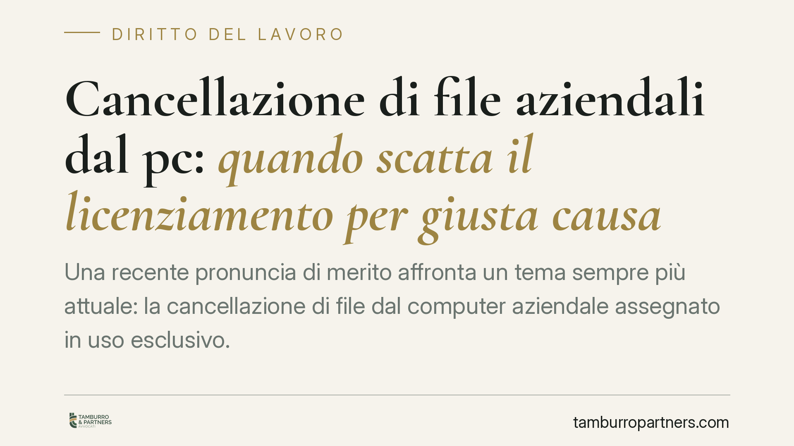

Cancellazione di file aziendali dal pc: quando scatta il licenziamento per giusta causa
Una recente pronuncia di merito affronta un tema sempre più attuale: la cancellazione di file dal computer aziendale assegnato in uso esclusivo. Secondo i giudici, la condotta può integrare giusta causa di licenziamento per violazione dei doveri del lavoratore, anche in assenza della prova di un danno economico concreto. Il patrimonio informativo dell'impresa entra così pienamente nel perimetro della fedeltà e della diligenza.

Il caso
Una lavoratrice con mansioni di segreteria cancella file contenuti nel pc aziendale che le era stato assegnato in uso esclusivo. Il datore procede al licenziamento immediato. La questione approda in appello, dove la condotta viene qualificata come violazione dei doveri del prestatore di lavoro, idonea a giustificare il recesso senza preavviso.
Un dato merita attenzione preliminare. Il numero di ruolo e l'anno della sentenza richiedono verifica puntuale presso le fonti ufficiali prima di qualsiasi utilizzo argomentativo. In questa sede trattiamo quindi il principio come orientamento di merito, non come precedente consolidato.
Inquadramento normativo
Il fondamento del recesso è l'art. 2119 del codice civile, che consente la risoluzione immediata del rapporto in presenza di una causa che non consente la prosecuzione, nemmeno provvisoria. È la cosiddetta giusta causa: un inadempimento così grave da incrinare in modo irreparabile il vincolo fiduciario.
La condotta di cancellazione va letta alla luce di due norme complementari. L'art. 2104 c.c. impone al lavoratore la diligenza richiesta dalla natura della prestazione: custodire e non pregiudicare gli strumenti e i dati affidati rientra pienamente in questo dovere. L'art. 2105 c.c. aggiunge l'obbligo di fedeltà, tradizionalmente riferito al divieto di concorrenza e di divulgazione di notizie riservate. L'estensione di questo obbligo al patrimonio digitale dell'impresa è un passaggio interpretativo: proprio per questo il riferimento alla diligenza ex art. 2104 c.c. fornisce la base più solida, perché la distruzione di dati è prima di tutto un danneggiamento dello strumento di lavoro.
Resta sullo sfondo l'art. 2106 c.c., che richiede proporzionalità tra infrazione e sanzione. Il licenziamento è la misura più grave: la sua legittimità dipende dalla rilevanza dei dati cancellati, dall'intenzionalità della condotta e dall'assenza di giustificazioni plausibili. Non ogni cancellazione equivale automaticamente a giusta causa.
Implicazioni pratiche
Per il datore di lavoro. La pronuncia conferma che la tutela del patrimonio informativo può sostenere un recesso anche senza quantificazione del danno. Ciò non esonera, però, dall'onere di dimostrare la condotta e la sua gravità. La contestazione disciplinare deve essere specifica: generiche affermazioni di "file mancanti" non bastano.
Per il lavoratore. Il pc aziendale non è spazio personale. Cancellare dati, anche al termine del rapporto o in un momento di conflitto, espone a conseguenze pesanti. Chi ritiene di avere ragioni legittime per intervenire sui file — ad esempio la rimozione di dati personali propri — dovrebbe documentarle e, quando possibile, concordarle.
Il valore della prova digitale
In questo tipo di contenziosi la prova si gioca sui dettagli tecnici. Log di sistema, metadati dei file, cronologie di accesso e analisi forense del dispositivo consentono di ricostruire chi ha agito, quando e con quali modalità. Senza questi elementi, la contestazione rischia di restare un'affermazione non supportata.
Sul piano processuale, l'art. 416 c.p.c. impone al datore convenuto di prendere posizione in modo preciso nella memoria difensiva e di indicare mezzi di prova e documenti. Arrivare in giudizio con un fascicolo tecnico ordinato — e acquisito correttamente — fa la differenza tra una contestazione solida e una vulnerabile.
Cosa fare in concreto
- Regolamentate l'uso dei dispositivi. Adottate una policy scritta su pc, account e trattamento dei file, consegnata e sottoscritta dal personale.
- Preservate la prova prima di contestare. Acquisite log e copie forensi del dispositivo con modalità che ne garantiscano l'integrità, evitando interventi che alterino i dati.
- Redigete una contestazione disciplinare specifica. Indicate file, date e modalità della condotta; evitate formule generiche.
- Valutate la proporzionalità. Prima del licenziamento, misurate la gravità effettiva alla luce dell'art. 2106 c.c. e dei precedenti disciplinari.
- Verificate i riferimenti giurisprudenziali. Non fondate una strategia su una pronuncia il cui estremo non sia stato controllato alla fonte ufficiale.
La distruzione di dati aziendali tocca il cuore del rapporto fiduciario, ma la sua rilevanza disciplinare va sempre ancorata a prove solide e a un giudizio di proporzionalità. Consigliamo, in presenza di episodi simili, un confronto tempestivo con un legale prima di qualsiasi atto.
Ogni storia di lavoro ha i suoi tempi.
Se gestisci HR e vuoi un confronto su contenzioso, ispezioni o licenziamenti, scrivi allo studio. Ti rispondiamo entro un giorno lavorativo.